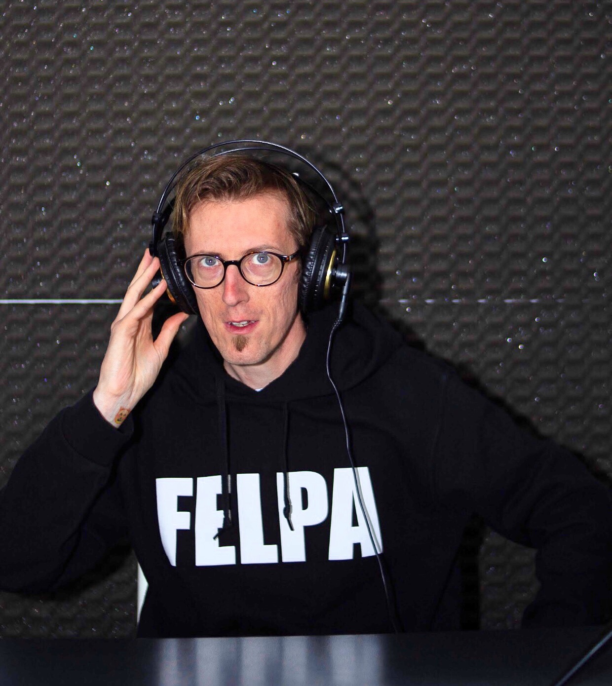

«Nessuno può impedire che una storia venga raccontata»
STUDIO
PARNASSUS
Produzione video. Storytelling visivo. Dal 2020.

Fondatore
Chi siamo
Un occhio per la narrazione
Studio Parnassus nasce nel 2020 dalla volontà di Giulio Oldrati di dedicarsi interamente al mondo della produzione video, con un focus sull'editing professionale e sul video making.
Negli anni lo studio ha collaborato con realtà di primo piano come Sky Italia e il Comune di Stradella, e con numerosi artisti ed ensemble musicali — tra cui A Crime Called…, The Sica, Sacher Quartet e Lady Soprano, oltre alla realizzazione di video film per matrimoni.
Le aree di intervento spaziano dall'editing per redazioni web e testate giornalistiche ai video clip musicali, dalle riprese live in studio ai concerti e agli eventi aziendali. Un approccio artigianale alla qualità, con un occhio sempre orientato alla narrazione visiva.
Servizi — 01 / 04
Video Clip
01
Video Clip
Musicali
Trasformiamo un brano in racconto visivo. Lavoriamo fianco a fianco con artisti e band — dall'ascolto della musica alla pre-produzione, dallo storyboard al montaggio finale — modellando ogni progetto su misura. Sappiamo passare dal video narrativo alla performance dal vivo in studio senza perdere identità. Ci appassiona dare a una canzone un'immagine che resti impressa, curando ritmo, colore e dettaglio fotogramma dopo fotogramma.
02
Video Promo
Artisti & Aziende
Raccontiamo chi sei e cosa fai con il linguaggio del video. Costruiamo la comunicazione del tuo brand attraverso storytelling autentico, contenuti pensati per social e web e formati pronti per ogni canale. Ci muoviamo con la stessa naturalezza tra realtà creative e mondo corporate, traducendo valori e obiettivi in immagini chiare ed efficaci — sempre con cura del messaggio e del pubblico che vogliamo raggiungere.
03
Cortometraggi
& Documentari
Quando una storia ha bisogno di tempo e respiro, lavoriamo sulla narrazione lunga. Strutturiamo racconti complessi con sguardo registico: documentari, ritratti d'artista, progetti indipendenti e di ricerca. Curiamo scrittura, riprese e montaggio per costruire un arco emotivo solido, capace di tenere insieme realtà e visione. È il formato in cui mettiamo più dedizione artigianale, perché ogni dettaglio contribuisce al senso dell'insieme.
04
Digitalizzazione
VHS & Restauro
Molti ignorano che i nostri vecchi VHS coi ricordi di una vita inizia a deteriorarsi dopo circa 20 anni. Noi recuperiamo e digitalizziamo ad alta qualità vecchie cassette VHS e supporti datati, intervenendo poi con restauro cromatico, stabilizzazione e pulizia di audio e video. È un lavoro di precisione che preserva la memoria — familiare, artistica o d'archivio — e la rende fruibile sui formati di oggi, senza tradire il carattere originale delle immagini di un tempo.
Servizi — extra
ALTRE TIPOLOGIE DI VIDEO CHE REALIZZIAMO
Perché il video
Lo strumento
più potente
di oggi.
più potente
di oggi.
Oggi il video è il linguaggio più potente che abbiamo per comunicare. È il formato che le persone scelgono, guardano fino in fondo e ricordano: domina i social, alimenta il web e definisce il modo in cui brand, artisti e aziende si presentano al mondo.
La sua forza sta nella capacità di creare connessione. In pochi secondi unisce immagine, suono, ritmo ed emozione, raccontando in modo immediato ciò che mille parole faticano a dire. Non si limita a informare: coinvolge, emoziona e costruisce fiducia.
Per un artista significa dare corpo alla propria musica e alla propria identità. Per un'azienda significa farsi riconoscere, spiegare un prodotto, mostrare i valori e le persone dietro un marchio. In entrambi i casi il video trasforma un messaggio in esperienza.
In un panorama sempre più affollato, a fare la differenza non è la quantità ma la qualità del racconto. Una storia costruita con cura — con la giusta luce, il giusto montaggio, il giusto tempo — emerge, resta e genera valore. È questo il nostro mestiere: mettere la tecnica al servizio della narrazione.
Hai un progetto
in mente?
Raccontaci la tua idea: dal primo confronto al montaggio finale, costruiamo insieme il video giusto.